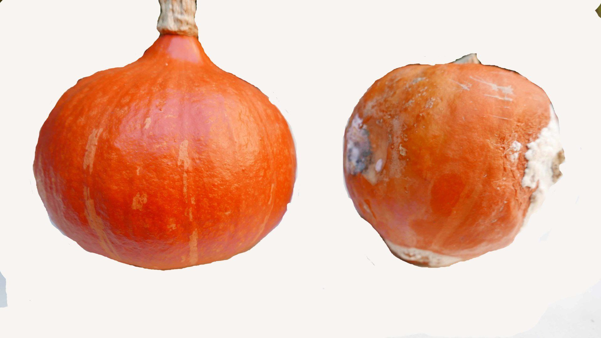

Gewassen A tot P
Telen richting kwaliteit per gewas of product nader bekeken.
Gewassen A tot P
INHOUD
Appel
Appel, licht en schaduw
Veel onderzoek is in het verleden gedaan naar de invloed van licht en schaduw op de kwaliteit. Op zich is de hoeveelheid licht in de praktijk beperkt te beïnvloeden. De resultaten van de proeven vertonen wel veel gelijkenis met proeven waarbij met verschillende hoeveelheden stikstof wordt bemest.

Zon:
Links
rode kleur, hoog droge stofgehalte veel suiker, de beste smaak
Halfschaduw:
Midden
Eigenschappen veelal tussen zon en schaduw in
Schaduw:
Rechts
geel-groene kleur, lager droge stof- en suikergehalte, minder goede smaak
Aardappel

Afgebeeld zijn twee ontwikkelingsreeksen van aardappels (ras Santé). Deze aardappels zijn gegroeid op het biologische en het gangbare bedrijf van de OBS te Nagele.
De biologische aardappels zijn gepoot op 24/4 en het loof is op 18/8 gedood middels branden. De gangbare groeiden tussen 24/4 en 7/9. Het biologische gewas had een geringere loofmassa en lichtere kleur dan het gangbare. Het gangbare gewas had een zeer zware loofontwikkeling met veel legering, afsterving en nieuwvorming van blad.
 De verschillen tussen beide gewassen zijn groot wat betreft bemesting en opbrengst. Het gangbare gewas kent tot aan de oogst een uitbundige groei. De verwachting zou zijn dat de biologische aardappels meer rijpingskenmerken zouden hebben dan de gangbare. Dat is niet het geval. Het hogere suikergehalte duidt op een nog niet voltooide omzetting van suikers in zetmeel. Veel andere eigenschappen zijn overeenkomstig. De sterke phytophtora aantasting en het daardoor niet goed kunnen afrijpen zal de oorzaak zijn van de gevonden geringe verschil in eigenschappen.
De verschillen tussen beide gewassen zijn groot wat betreft bemesting en opbrengst. Het gangbare gewas kent tot aan de oogst een uitbundige groei. De verwachting zou zijn dat de biologische aardappels meer rijpingskenmerken zouden hebben dan de gangbare. Dat is niet het geval. Het hogere suikergehalte duidt op een nog niet voltooide omzetting van suikers in zetmeel. Veel andere eigenschappen zijn overeenkomstig. De sterke phytophtora aantasting en het daardoor niet goed kunnen afrijpen zal de oorzaak zijn van de gevonden geringe verschil in eigenschappen.
(NRLO, 1992. tekeningen Gerda Peters)
Knolselderij
Proef met verschillende bemestingen
Bij een proefveld op zandgrond in Driebergen bleek de bemesting heel belangrijk voor de kwaliteit van knolselderij te zijn. Bij bemesting met stalmest start de groei vrij traag, waarschijnlijk door traag vrijkomen van stikstof. Drijfmest bevat veel stikstof die snel omgezet kan worden in nitraat en laat juist een sterke begingroei zien, gevolgd door een zware aantasting door de bladvekkenziekte. Hierdoor kan de afrijping niet goed verlopen.
Toch kan het zijn dat stikstof niet alles verklaart. Al heel lang is bekend dat stalmest positieve eigenschappen heeft die niet te verklaren zijn op grond van voedingsstoffen, vochthoudend vermogen, bodemleven enzovoort.
Proef op zandgrond in Driebergen


Boven stalmest, onder drijfmest. Bij drijfmest een uitbundige groei. Daarna een zeer sterke aantasting door bladvlekkenziekte.
Vergelijking twee bedrijven
Proef in Noord-Friesland (bedrijf de Plaats) en de Betuwe (bedrijf de Terp).Ras Monarch
| N. Friesland | Betuwe | |
|---|---|---|
| Knolgewicht kg | 1,3 | 1,2% |
| droge stof | 9,4 | 8,8 |
| Nitraatgehalte (mg/kg) | 363 | 26 |
| Suikergehalte (Brix) | 5,7 | 5,5 |
| Droge stofverlies | ||
| zelfontbindingstest (%) | ||
| Bodemorganische stof (%) | 5,4 | 3,8 |
| Stikstof in profiel na oogst (kgN/ha) | 99 | 47 |
Door een snelle mineralisatie van stikstof op de kalkrijke diep doorwortelbare Friese grond kwam er veel stikstof vrij. Hierdoor is het nitraatgehalte hoog en was er na de oogst ook nog veel stikstof in het bodemprofiel aanwezig. In de Betuwe werd geteeld op een bodem die weinig stikstof leverde (zeer laag nitraatgehalte knolselderij en veel minder stikstof na de oogst in de bodem). Waarom is dan het suikergehalte niet hoger? De reden is waarschijnlijk de sterkere aantasting door de bladvlekkenziekte. Deze ziekte hangt niet alleen samen met de stikstofvoorziening (zie voorgaande proefveld Driebergen), maar ook met vruchtopvolging en openheid landschap.(Bron,Lammerts van Bueren e.a., 1990)
-1920w.jpg)
In Noord-Friesland de meest uitbundige groei door aard bodemtype en veel beschikbare stikstof.
-1920w.jpg)
In de Betuwe meer gedrongen groei.
Toch is de productkwaliteit in de Betuwe niet duidelijk beter door meer bladvlekkenziekte.
Onderzoek Louis Bolk Instituut. Tekeningen Gerda Peters
Melk
Bij melk gaat het om kruiden.De begrippen groei en rijping lijken bij dierlijke producten niet zo makkelijk toe te passen. De planten die dieren eten zijn weer wel in die richting te waarderen. Bij melk zijn hier duidelijke onderzoeksresultaten bekend. Hooi en kruiden hebben meer rijpingskwaliteit. Zwaar bemest jong gras meer groei.
In 1981 en 1982 is onderzoek gedaan naar het gedrag van melk bewaard bij 20o C (NRLO 1983c). Melk van verschillende bedrijven bleken wisselend lang drinkbaar. Na deze periode konden ze overgaan in rotting of verzuring. Deze processen zijn te verbinden met groei (rotting, basisch) en rijping (verzuring). Verzuring sluit meer aan bij natuurlijke processen en is waarschijnlijk gunstiger. In 2015 zei Ton Baars, een van de onderzoekers, op een congres over dit onderzoek dat uit een dergelijk onderzoek kon worden afgeleid hoe de melk tot ons spreekt.
Melk van koeien die in de zomer maandenlang in de wei lopen en niet te zwaar bemest gras eten en in de winter hooi en niet teveel maiskuilvoer eten bevat een hoger gehalte aan meervoudige onverzadigde vetzuren bevatten zoals CLA’s (geconjungeerd linolzuur) en omega-3. Ton Baars (Adriaanse e.a., 2005) deed hier veel onderzoek naar. Aan omega 3-vetzuren worden positieve eigenschappen toegeschreven in het voorkomen van hart- en vaatziekten artritis en depressies. Biologische bedrijven hebben vaak hogere gehalten aan omega 3 vetzuren.
-240bac26-1920w.JPG)
Gehalten aan omega 3 vetzuren op 5 biologische (groen) en 5 gangbare (blauw) bedrijven.
(Adriaanse e.a., 2005)

Teveel kuil- en krachtvoer is ongunstig voor de kwaliteit van melk

Veel vers gras, kruiden en hooi geven meer rijpingskwaliteit aan melk.
Daarnaast is het gehalte aan omega 3 vetzuren in de melk hoger (onder meer goed tegen hart- en vaatziekten, artritis, depressies)
Pompoen
Rassen pompoen
De huidige veredeling richt zich op opbrengst en vergeet te vaak smaak en andere kwalitatieve eigenschappen. Naast de smakelijke traditionele oranje pompoenen is er nu ook de smakeloze Amoro. Deze pompoen heeft een hoge opbrengst door meer water in de pompoen. De veredeling lijkt wel te gaan in de richting van de voor consumptie ongeschikte reuzenpompoenen.
-1920w.JPG)
De traditionele pompoen
(Uchiki kuri)
Steel op verhoging
-1920w.JPG)
Een nieuw ras
(Amoro)
Steel verzonken
-1920w.JPG)
Pompoenen in oktober 2016. Links de gewone pompoen (Uchiki kuri), rechtes de nieuwe Amoro.

Dezelfde pompoenen 6 weken bewaard op kamertemperatuur (Onderzoek Gaia Bodemonderzoek, 2016)
Het verschil in houdbaarheid is hier heel extreem, maar bij onderzoek wordt ook een duidelijk verschil in houdbaarheid gevonden. De opbrengst van de Uchiki kuri is 15.000 –18.000 kg/ha. Die van de Amoro 30.000-40.000 kg/ha. De smaak van de Uchiki kuri is aanmerkelijk beter dan van de Amoro. Het droge stofgehalte van de linker pompoen, de Uchiki kuri, is 15,2 % en van de rechter, de Amoro, 6,1 %. Bij de veredeling wordt er dus eigenlijk meer water in de pompoen gestopt.
De veredeling lijkt te gaan in de richting van de voor consumptie ongeschikte reuzenpompoen. Hieronder de zwaarste pompoen ooit

De zwaarste pompoen ooit. Meer dan 1000 kg.
De zwaarste pompoen ooit. 1054 kg.Ongeschikt voor consumptie.(Foto Blik CH)Beni Meier uit Pfungen in Zwitserland toont hier in 2014 de zwaarste pompoen ooit. De wijze van veredelen en telen is af te keuren. Interessant is wel dat een tuinder met oude tuinbouwprincipes: stalmestcompost voor de bodemverzorging het wint van 30.000 high tech plantenverzorgers in de VS die de zwaarste pompoen proberen te telen.
Prei
Prei, beoordeling voedingskwaliteit
De voedingskwaliteit van prei is een onderwerp op zich. Dat hangt met de bijzondere bouw van de preiplant samen. Bij de meeste landbouwgewassen heb je eerst een vegetatieve fase, de groei van het blad en op een bepaald moment vormen zich knoppen, bloemen en vervolgens vruchten en zaden. Bij prei gebeurt dat ook, maar toch heel anders. Bij prei valt het op dat wortels, blad en bloem allemaal vergelijkbaar smaken. Een waar is de stengel eigenlijk? Je zou kunnen zeggen dat de preiplant eigenlijk vooral bloem is.
Kwaliteitsproblemen bij gewassen tonen zich vaak doordat de bladgroei te uitbundig is en de afrijping niet voldoende optreedt. De voorjaarsprocessen gaan door tot in de herfst en voor het eigenlijke herfstproces is niet voldoende ruimte. Bij een plant die eigenlijk helemaal bloem is ligt dit vraagstuk ingewikkelder. Naar de voedingskwaliteit van prei is weinig onderzoek gedaan. Waarschijnlijk zijn de aparte groeivorm van prei en het beperkte onderzoek naar de kwaliteit de redenen van het achterlopen van prei wat betreft inzicht in de kwaliteit.
De kwaliteit van prei
Bij het verwerken van prei is de sterk prikkelende geur opvallend. Deze is vaak zo sterk dat verschillen tussen planten moeilijk te vinden zijn. Bij het onderzoek naar prei bleek er een tendens dat bij planten die op schraal zand zijn geteeld de prikkelende geur vooral in het blad aanwezig is. Bij planten op klei en wat zwaarder bemest is de prikkelende geur vooral in de witte tot lichtgroene schacht aanwezig.
Na koken vermindert de prikkelende geur en deze kan bij planten op klei volledig verdwijnen.De smaak van gekookte prei kan zeer sterk wisselen. Van vrijwel afwezig zijn van smaak tot een zeer duidelijke aromatische preismaak. Ook een muffe smaak kan overheersen.
Matig bemeste prei op zand lijkt de meest duidelijk aromatische smaak te hebben. De oorzaak van verschillen tussen smaak van prei van verschillende herkomstig is vaak toch niet duidelijk. Prei op zand en klei

prei, zandgrond prei, kleigrond
Bij prei na 5 jaar zelfde voorgewassen en bemesting.
Links zandgrond bij Renkum. Dunne harige wortels, stijle en gedraaide bladeren met hangende punten, verticale stand, fier.
Rechts zavelgrond bij Tiel. Dikke en kronkelige wortels, brede vlezige bladeren, bladeren in lange bogen, meer horizontale stand, fors.
Tekeningen Leen Janmaat (Janmaat, 1982)
Licht en zwaar bemeste prei

Prei licht bemest

Prei zwaar bemest
Prei zandgrond Apeldoorn
Lichte bemesting, groei meer in de breedteZeer goed houdbaarNitraatgehalte 495 mg/kg
Prei zandgrond West Brabant
Zware bemesting, omhooggerichte groeiSlecht houdbaarNitraatgehalte 775 mg/kg
Preirassen
Bij rassenproeven blijken er duidelijke verschillen tussen de smaak van verschillende rassen. De richting die de verdeling kiest gaat in de richting van makkelijk oogsten, makkelijk verkoopklaar maken en weinig last van schimmelzieken. De lange compacte vorm die om deze redenen veel voorkomt lijkt niet de smaak te bevorderen.
Meer info over het breed uitwaaierende ras Akelei:
http://www.zaadgoed.nl/public/uploads/voorjaar%202014-web.pdf

Greet Lambrecht van het bedrijf de Akelei in Schriek in België is uitgegaan van een 25 jaar oude breed uitwaaierend ras en heeft een eigen breed uitwaaierend ras de Akelei via selectie ontwikkeld. Dit ras ook in de handel verkrijgbaar.

Prei, met zonder stikstofoverbemesting

Geen hulpmeststof

100 kg N/ha als hulpmeststof in februari
Geen hulpmeststof
Groei sterk in de breedte, gezonde plantOpbrengst 29 ton per ha
100 kg N/ha als hulpmeststof in februari
Groei in de breedte wordt een sterk omhooggerichte groeiOpbrengst 39 ton per ha
De overbemesting in februari betrof een stikstofrijke mest, een mengsel kippenmest en bloedmeel). De proef vond plaats op een lichte humusarme zavelgrond bij Lelystad. Deze jonge grond heeft nog weinig ‘oude kracht’ en een aanvullende stikstofbemesting is vaak nodig. Deze aanvullende bemesting kan in september gegeven worden als de grond nog warm en vochtig is of in februari als de grond nog koud is en het bodemleven moeilijk de stikstof vrij kan maken.(Bokhorst,1989) Prei, gewasontwikkeling

Licht bemeste prei, 50 ton stalmest per ha, midden,komt goed de winter door en komt daarna tot bloei. Zwaar bemeste prei, 100 ton stalmest per ha, onder heeft zwaar te lijden in de winter, maar herstelt zich.Niet bemeste prei, boven, toont in de winter ook niet vel weerstand.
(Tekeningen Gerda Peters)